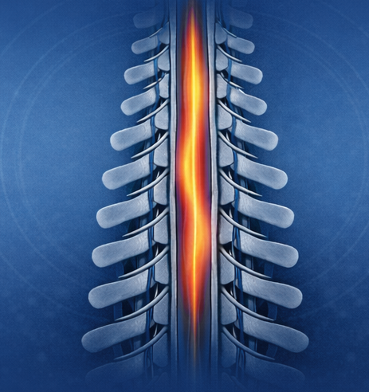
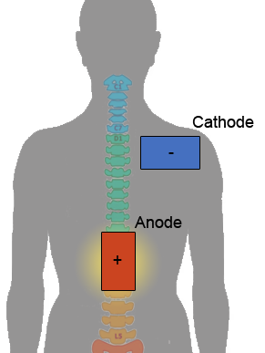

What I do
Data processing
Data Analysis
Data visualization
Machine Learning and AI
Who I am
I bring structure and strategic focus to challenging problems, helping teams move from chaos to clarity. My approach is grounded in empathy and clear communication, ensuring that people feel supported, included, and able to rely on me.
Featured Projects

Heat pain in the spinal cord
Chronic pain affects millions, yet we still don't fully understand how pain signals travel through the spinal cord. This project uses ultra high field MRI to visualize those pathways in real time.
Topics: Pain, fMRI, Spinal Cord

Spinal cord stimulation
The spinal cord is a tiny powerhouse that shapes how we move, feel, and process pain. With transcutaneous spinal direct current stimulation (tsDCS), we can now try to non-invasively nudge its excitability — and explore whether this gentle electrical tuning changes spinal processing of pain reflexes in humans.
Topics: Pain, Reflexes, Spinal Cord
Lab Setup
The lab started as a collection of devices with no shared language. I built the system that brought them together.
Topics: Hardware control, Device integration